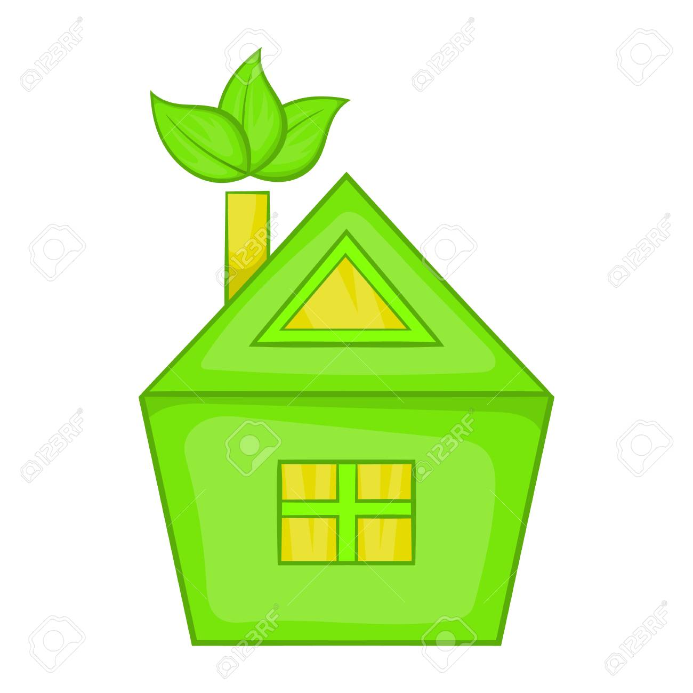

| Es aquella que logra las condiciones optimas de habitabilidad con el minimo consumo energético, teniendo en cuenta la orientación de la cons- trucción el terreno y la naturaleza que lo rodea. A continuación en esta página encontrarás información sobre el tema y el proceso que hicimos para construir una casa ecológica. Además implementamos páginas de otras materias. Este proyecto es importante para |
para concientizar que la ecología nos ayuda en el ahorro de un 3% aun 8% y en el bajo consumo de energía en un 90%. Minimiza el impacto ambiental en el costo de manteni- miento y contribuyen a la salud. ya que los materiales son reciclables en su mayoría. El efecto de la sobrepoblación es el consumo desmedido de recursos. El planeta tiene una capacidad limitada de generación de materia prima, cada año |
el déficit de los recursos naturales, es decir el consumo de estos a un ritmo más rápido del que el planeta puede generarlos, llega más rápido. Las casas ecológicas aprovechan los recursos naturales lo mejor posible, pues utilizan la energía del sol, aire y reutilizan el agua. De este modo se generan energías renovables como la geotérmica, la acrotermica o la energía solar fotovolcanica. |
|  | ||
| El aumento poblacional desmedido también genera problemas sociales y económicos, ya que rebasa la capacidad de carga de los recursos naturales, así como la competencia de los gobiernos para proporcionar empleo, viviendas, servicios públicos, servicios de la salud y educación. |
Para cubrir las necesidades con estos recuersos o para construir viviendas u otras estructuras, la deforestación y tala de arboles es una de las consecuencias de la sobrepoblación que no solo afecta a los bpsques o ecosistemas naturales, si no también afecta a la biodiversidad y todo aquello que lo conforma. Un proyecto bien planteado de casas ecológicas |
en Tijuana como otras comunidades, beneficia principalmente en el coste y gastos de mantenimiento y construcción. El objetivo de las casas ecológicas es satisfacer las necesidades de las personas que viven en una forma amigable con el medio ambiente. En Tijuana la contaminación del aire es excesica y notable, al utilizar materiales de gas de efecto invernadero generado por la industria empresarial disminuye un 13%. |
Hay que tomar en cuenta lo que esta pasando en nuestro planeta
y el como nos esta afectando. No solo por el impacto
que ha tenido en el presente, sino también en el impacto que tendra para
las futuras generaciones. Al llevar a cabo este proyecto
tuvimos algunas complicaciones, entre ellas la organización del equipo
pero al final logramos dividirnos el trabajo. Además aprendimos que debems usar
energías renovables.